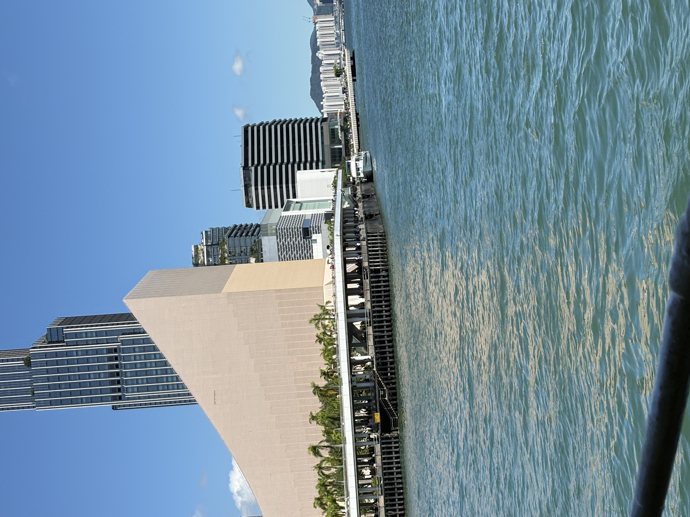

Exhibition Visit
Attending the Shenzhen Cross-border E-commerce Exhibition at the World Exhibition & Convention Center. Exploring industry trends and networking opportunities.

City Exploration
Enjoying the beautiful waterfront scenery and modern city architecture. Taking a moment to appreciate the urban landscape and relax by the water.

Food Moments
Indulging in delicious meals - from creamy mango sago dessert to rich pasta dishes. Food is one of life's simple pleasures that brings joy to everyday moments.

Reading Time
Exploring literature and philosophy through books. Currently reading "You Don't Have to Rush to Become an Adult" - a thoughtful reflection on personal growth and life's journey.